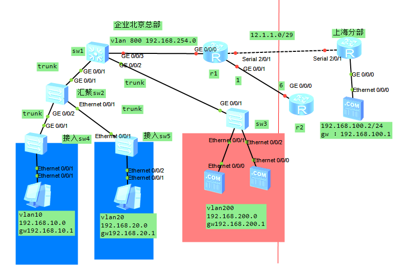

实验要求：
① 用户的网关配置在核心交换机
② 企业内网划分多个vlan ，减少广播域大小，提高网络稳定性
③ 所有设备，在任何位置都可以被telnet远程管理
④ 出口配置NAT
⑤ 所有用户均为自动获取ip地址
⑥ 企业总部和分支采用PPP 广域网链路连接。并采用CHAP对链路做认证。
⑦ 企业总部和分支采用ospf 路由协议连接。
① 用户的网关配置在核心交换机
② 企业内网划分多个vlan ，减少广播域大小，提高网络稳定性
sw4 sw5 sw3
划分vlan
配置trunk
sw4：
Enter system view, return user view with Ctrl+Z.
[Huawei]sysname sw4
[sw4]vlan batch 10 999
[sw4]stp mode rstp
[sw4]port-group group-member Ethernet 0/0/1 to Ethernet 0/0/22
[sw4-port-group]port link-type access
[sw4-port-group]port default vlan 10
[sw4-port-group]stp edged-port enable
[sw4-port-group]q
[sw4]int GigabitEthernet 0/0/1
[sw4-GigabitEthernet0/0/1]port link-type trunk
[sw4-GigabitEthernet0/0/1]port trunk allow-pass vlan 10 999
[sw4-GigabitEthernet0/0/1]q
[sw4]interface Vlanif 999
[sw4-Vlanif999]ip addr 192.168.255.4 24
[sw4-Vlanif999]q
[sw4]ip route-static 0.0.0.0 0 192.168.255.1
[sw4]telnet server enable
[sw4]aaa
[sw4-aaa]local-user shang.gao password cipher sgao18 privilege level 3
[sw4-aaa]local-user shang.gao service-type telnet
[sw4-aaa]q
[sw4]user-interface vty 0 4
[sw4-ui-vty0-4]authentication-mode aaa
[sw4-ui-vty0-4]q
sw5：
Enter system view, return user view with Ctrl+Z.
[Huawei]sysname sw5
[sw5]vlan batch 20 999
[sw5]stp mode rstp
[sw5]port-group group-member Ethernet 0/0/2 to Ethernet 0/0/22
[sw5-port-group]port link-type access
[sw5-port-group]port default vlan 20
[sw5-port-group]stp edged-port enable
[sw5-port-group]q
[sw5]int Ethernet 0/0/1
[sw5-Ethernet0/0/1]port link-type trunk
[sw5-Ethernet 0/0/1]port trunk allow-pass vlan 20 999
[sw5-Ethernet 0/0/1]q
[sw5]interface Vlanif 999
[sw5-Vlanif999]ip addr 192.168.255.5 24
[sw5-Vlanif999]q
[sw5]ip route-static 0.0.0.0 0 192.168.255.1
[sw5]telnet server enable
[sw5]aaa
[sw5-aaa]local-user shang.gao password cipher sgao18 privilege level 3
[sw5-aaa]local-user shang.gao service-type telnet
[sw5-aaa]q
[sw5]user-interface vty 0 4
[sw5-ui-vty0-4]authentication-mode aaa
[sw5-ui-vty0-4]q
[sw5]q
The current configuration will be written to the device.
Are you sure to continue?[Y/N]y
sw2
Enter system view, return user view with Ctrl+Z.
[Huawei]sysname sw2
[sw2]vlan batch 10 20 999
[sw2]stp mode rstp
[sw2]port-group group-member GigabitEthernet0/0/1 Ethernet 0/0/1 GigabitEthernet0/0/2
[sw2-port-group]port link-type trunk
[sw2-port-group]port trunk allow-pass vlan 10 20 999
[sw2-port-group]q
[sw2]interface Vlanif 999
[sw2-Vlanif999]ip addr 192.168.255.2 24
[sw2-Vlanif999]q
[sw2]ip route-static 0.0.0.0 0 192.168.255.1
[sw2]telnet server enable
[sw2]aaa
[sw2-aaa]local-user shang.gao password cipher sgao18 privilege level 3
[sw2-aaa]local-user shang.gao service-type telnet
[sw2-aaa]q
[sw2]user-interface vty 0 4
[sw2-ui-vty0-4]authentication-mode aaa
[sw2-ui-vty0-4]q
[sw2]q
The current configuration will be written to the device.
Are you sure to continue?[Y/N]y
sw3
Enter system view, return user view with Ctrl+Z.
[Huawei]sysname sw2
[sw3]vlan batch 200 999
[sw3]stp mode rstp
[sw3]port-group group-member Ethernet 0/0/1 Ethernet 0/0/2
[sw3-port-group]port default vlan 20
[sw3-port-group]stp edged-port enable
[sw3-port-group]q
[sw3]int GigabitEthernet0/0/1
[sw3-GigabitEthernet0/0/1]port link-type trunk
[sw3-GigabitEthernet0/0/1]port trunk allow-pass vlan 200 999
[sw3-GigabitEthernet0/0/1]q
[sw3]interface Vlanif 999
[sw3-Vlanif999]ip addr 192.168.255.3 24
[sw3-Vlanif999]q
[sw3]ip route-static 0.0.0.0 0 192.168.255.1
[sw3]telnet server enable
[sw3]aaa
[sw3-aaa]local-user shang.gao password cipher sgao18 privilege level 3
[sw3-aaa]local-user shang.gao service-type telnet
[sw3-aaa]q
[sw3]user-interface vty 0 4
[sw3-ui-vty0-4]authentication-mode aaa
[sw3-ui-vty0-4]q
<
[sw3]q
The current configuration will be written to the device.
Are you sure to continue?[Y/N]y
sw1
Enter system view, return user view with Ctrl+Z.
[Huawei]sysname sw2
[sw1][sw1]vlan batch 10 20 200 999 800
[sw1]stp mode rstp
[sw1]stp priority 0
[sw1]int GigabitEthernet 0/0/1
[sw1-GigabitEthernet0/0/1]port link-type trunk
[sw1-GigabitEthernet0/0/1]port trunk allow-pass vlan 10 20 999
[sw1-GigabitEthernet0/0/1]int gi0/0/2
[sw1-GigabitEthernet0/0/2]port link-type trunk
[sw1-GigabitEthernet0/0/2]port trunk allow-pass vlan 200 999
[sw1-GigabitEthernet0/0/2]int gi0/0/3
[sw1-GigabitEthernet0/0/3]port link-type access
[sw1-GigabitEthernet0/0/3]port default vlan 800
[sw1-GigabitEthernet0/0/3]q
[sw1]interface Vlanif 800
[sw1-Vlanif800]ip addr 192.168.254.1 24
[sw1]dhcp enable
[sw1]ip pool vlan_10
Info:It's successful to create an IP address pool.
[sw1-ip-pool-vlan_10]network 192.168.10.0 mask 255.255.255.0
[sw1-ip-pool-vlan_10]gateway-list 192.168.10.1
[sw1-ip-pool-vlan_10]dns-list 8.8.8.8
[sw1-ip-pool-vlan_10]q
[sw1]ip pool vlan_20
[sw1-ip-pool-vlan_20]network 192.168.20.0 mask 255.255.255.0
[sw1-ip-pool-vlan_20]gateway-list 192.168.20.1
[sw1-ip-pool-vlan_20]dns-list 8.8.8.8
[sw1-ip-pool-vlan_20]q
[sw1]ip pool vlan_200
[sw1-ip-pool-vlan_200]network 192.168.200.0 mask 255.255.255.0
[sw1-ip-pool-vlan_200]gateway-list 192.168.200.1
[sw1-ip-pool-vlan_200]dns-list 8.8.8.8
[sw1-ip-pool-vlan_200]q
[sw1]int vlan 10
[sw1-Vlanif10]dhcp select global
[sw1]int vlan 20
[sw1-Vlanif20]dhcp select global
[sw1]int vlan 200
[sw1-Vlanif200]dhcp select global
[sw1-Vlanif200]q
[sw1]int Vlanif 10
[sw1-Vlanif10]ip address 192.168.10.1 24
[sw1-Vlanif10]int vlan 20
[sw1-Vlanif20]ip addr 192.168.20.1 24
[sw1-Vlanif20]int vlan 200
[sw1-Vlanif200]ip addr 192.168.200.1 24
[sw1]interface Vlanif 999
[sw1-Vlanif999]ip addr 192.168.255.1 24
[sw1-Vlanif999]q
[sw1]telnet server enable
[sw1]ip route-static 0.0.0.0 0 192.168.254.2 #r2路由
[sw1]aaa
[sw1-aaa]local-user shang.gao password cipher sgao18 privilege level 3
[sw1-aaa]local-user shang.gao service-type telnet
[sw1-aaa]q
[sw1]user-interface vty 0 4
[sw1-ui-vty0-4]authentication-mode aaa
[sw1-ui-vty0-4]q
[sw1]ospf 1
[sw1-ospf-1]area 0
[sw1-ospf-1-area-0.0.0.0]network 192.168.10.0 0.0.0.255
[sw1-ospf-1-area-0.0.0.0]network 192.168.20.0 0.0.0.255
[sw1-ospf-1-area-0.0.0.0]network 192.168.200.0 0.0.0.255
[sw1-ospf-1-area-0.0.0.0] network 192.168.255.0 0.0.0.255
[sw1-ospf-1-area-0.0.0.0] network 192.168.254.0 0.0.0.255
[sw1-ospf-1-area-0.0.0.0]q
[sw1]q
The current configuration will be written to the device.
Are you sure to continue?[Y/N]y
R1
Enter system view, return user view with Ctrl+Z.
[Huawei]sysname R1
[R1] ip route-static 0.0.0.0 0 12.1.1.6
[R1]acl 2000
[R1-acl-basic-2000]rule 5 permit source 192.168.0.0 0.0.255.255
[R1-acl-basic-2000]interface GigabitEthernet 0/0/1
[R1-GigabitEthernet0/0/1]nat outbound 2000
[R1-GigabitEthernet0/0/1]ip address 12.1.1.1 255.255.255.248
[R1-GigabitEthernet0/0/1]interface GigabitEthernet 0/0/0
[R1-GigabitEthernet0/0/0]ip addr 192.168.254.2 24
[R1-GigabitEthernet0/0/0]interface Serial 2/0/1
[R1-Serial2/0/1]ip address 192.168.253.1 24
[R1]ospf 1
[R1-ospf-1]area 0
[R1-ospf-1-area-0.0.0.0] network 192.168.253.0 0.0.0.255
[R1-ospf-1-area-0.0.0.0] network 192.168.254.0 0.0.0.255
[R1-ospf-1-area-0.0.0.0]q
[R1]aaa
[R1-aaa]local-user shang.gao password cipher sgao18
[R1-aaa]local-user shang.gao service-type ppp
[R1-Serial2/0/1]ppp authentication-mode chap#需对端设置认证
R2
R3
[r3]int Serial 2/0/1
[r3-Serial2/0/1] ip address 192.168.253.2 255.255.255.0
[r3-Serial2/0/1]ppp chap user shang.gao
[r3-Serial2/0/1]ppp chap password simple sgao18
[r3-Serial2/0/1]interface GigabitEthernet0/0/0
[r3-GigabitEthernet0/0/0]ip address 192.168.100.1 255.255.255.0
[r3]ospf 1
[r3-ospf-1]area 0.0.0.0
[r3-ospf-1-area-0.0.0.0] network 192.168.100.0 0.0.0.255
[r3-ospf-1-area-0.0.0.0] network 192.168.253.0 0.0.0.255